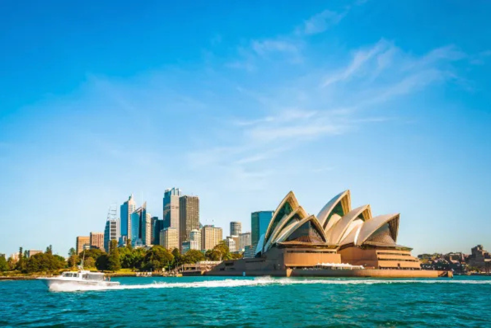
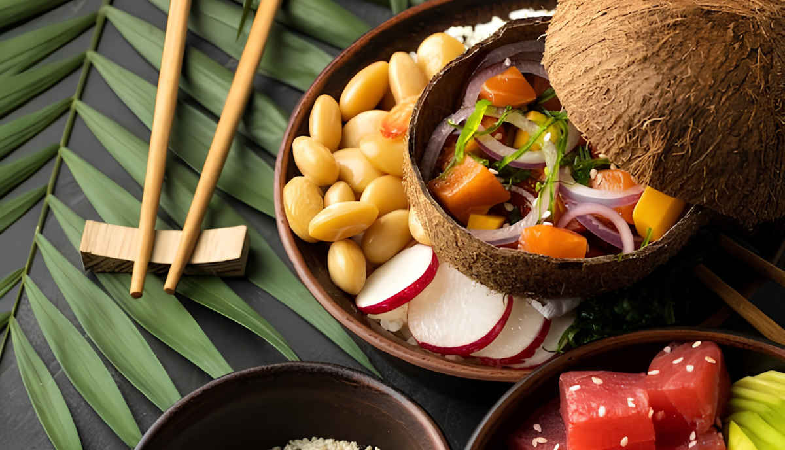
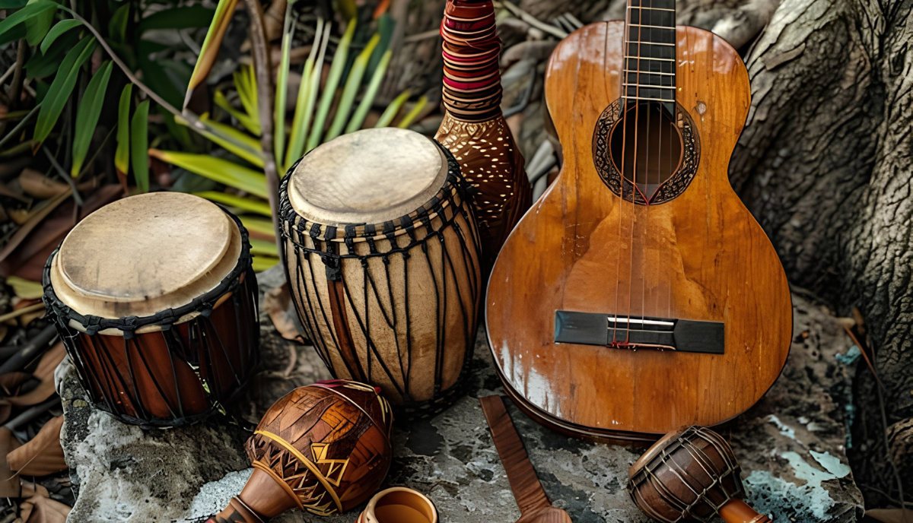
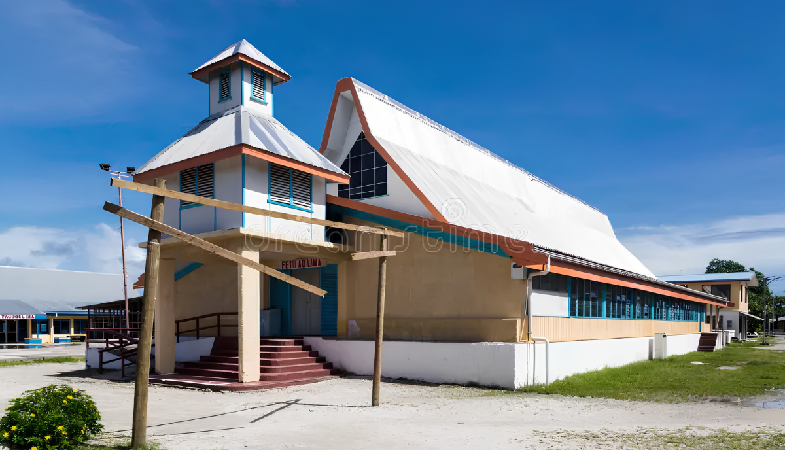
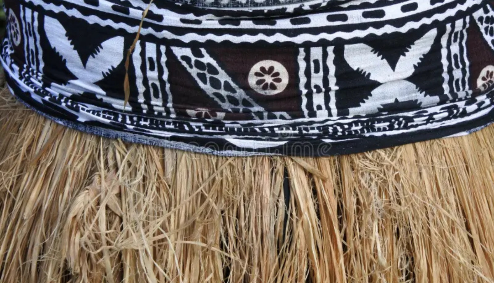

O continente da Oceania possuí uma variedade de tradições,
tendo
influencias históricas e geográficas sendo considerada uma das regiões muito diversas.
E aqui iremos falar curiosidades e sua importância cultural, então segue o restante do
texto!!

A Oceania é um continente situado entre os oceanos Índico e Pacífico, a sudeste da Ásia. A maior parte de suas terras fica no Hemisfério Sul do planeta. É composto por 14 países e ilhas e territórios pertencentes a outros países, tanto oceânicos quanto de outros continentes. A maior e mais populosa das nações é a Austrália, que consiste também na principal economia do continente.



